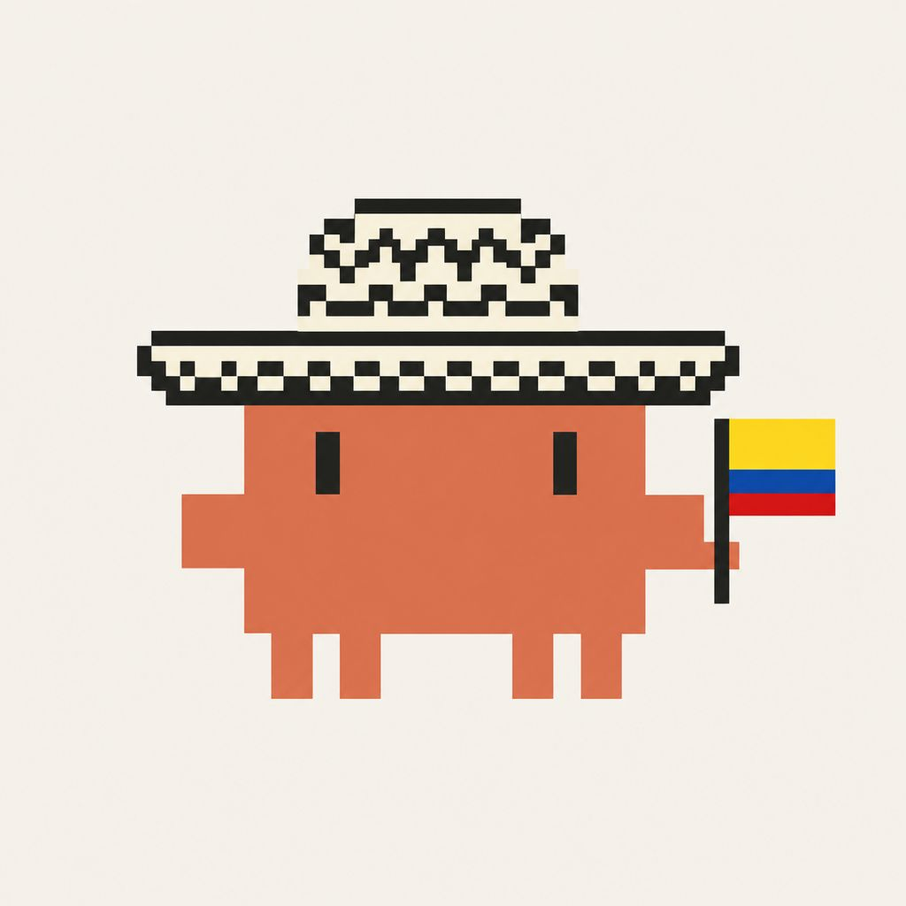
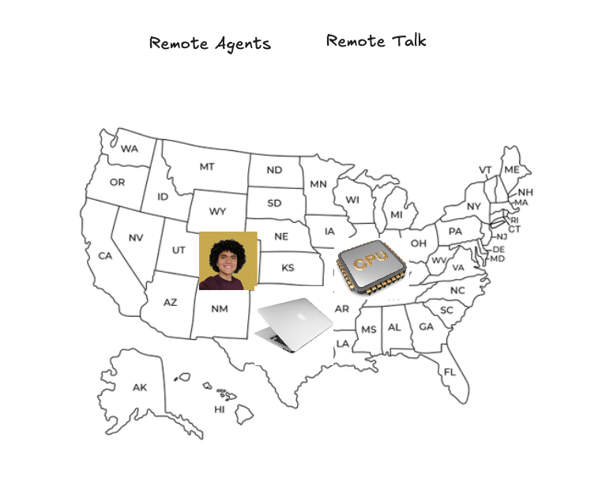
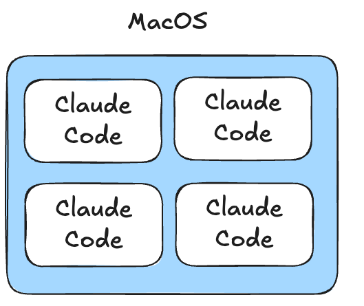
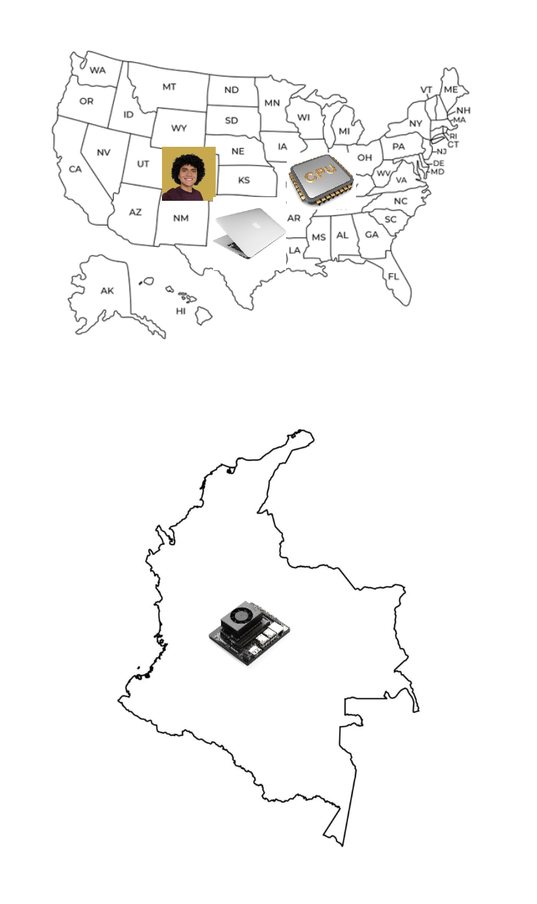
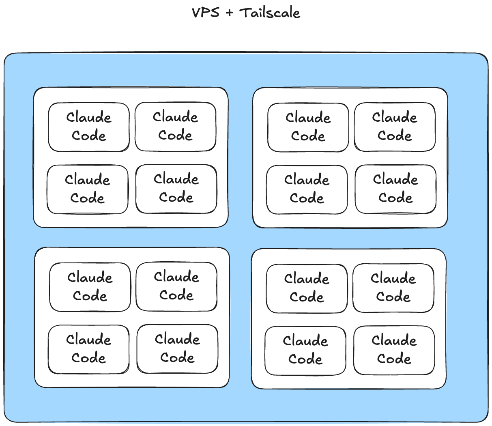
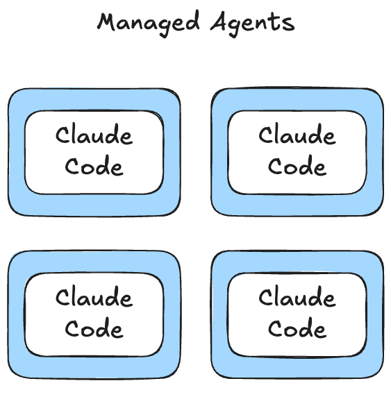

en que corro
remote agents hoy


Jairo Torregrosa
Sr AI Research Engineer en Mercado Libre
✳ Claude Ambassador · Agentic Engineering
$ claude "migra openclaw de typescript a rust" ⏺ migración en progreso… 142/380 archivos ⏱ 47 min corriendo · sin intervención
se me fue la luz.
perdí todo el tiempo en que el agente pudo estar trabajando.
al día siguiente: nada. trato de que todo corra remote.
el agente no consume tu CPU.
consume tu uptime.
¿dónde vive el agente?

la inferencia corre en anthropic. tu máquina solo mantiene vivo el hilo de la sesión.
la escalera
mac
tu RAM
jetson / VPS
tu paciencia de sysadmin
managed
tu tarjeta
cada salto a la derecha, una responsabilidad menos.
peldaño 1: tu mac

claude rc --permission-mode auto --spawn session
# proyecto específico
claude rc --permission-mode auto --spawn worktree
- tu filesystem, tus permisos, tus tools
- cierras la tapa y el agente muere
peldaño 2: jetson / VPS


- el VPS no acelera nada. solo se mantiene vivo.
tmux+tailscale· ~$25–30/mes- seguridad, updates y monitoreo: tuyos
peldaño 3: managed agents

- $0.08 / session-hour · idle gratis
- runtime: 11% del costo · tokens: 89%
- agentes especializados, siempre disponibles, por API call
anthropic te vende ese uptime como servicio.
cómo empezar hoy
escala cuando el dolor de operar supere el costo de delegar.
la misma escalera de siempre: bare metal, VPS, serverless. en fast-forward.
el agente no consume tu CPU.
consume tu uptime.
cada salto a la derecha,
una responsabilidad menos.
empieza en tu laptop hoy,
escala cuando duela.